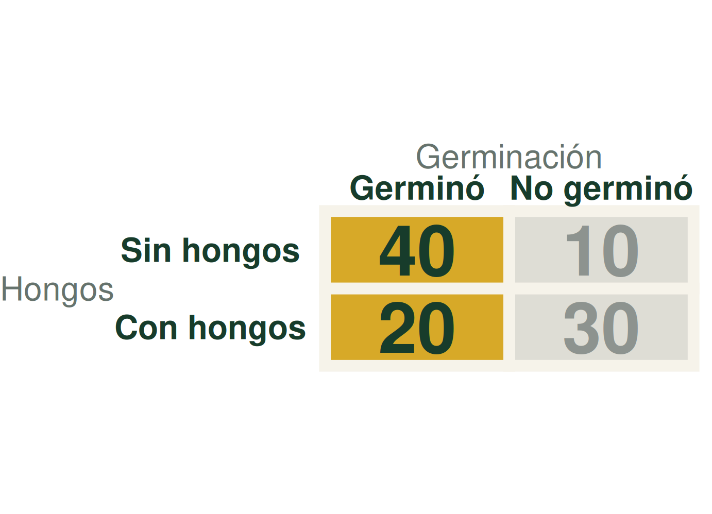
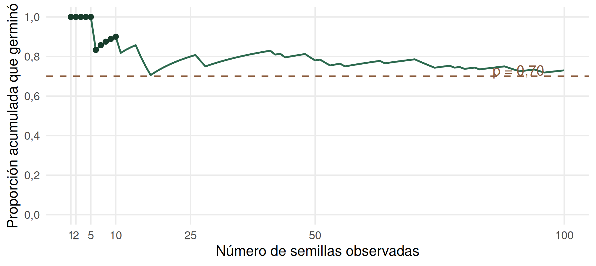
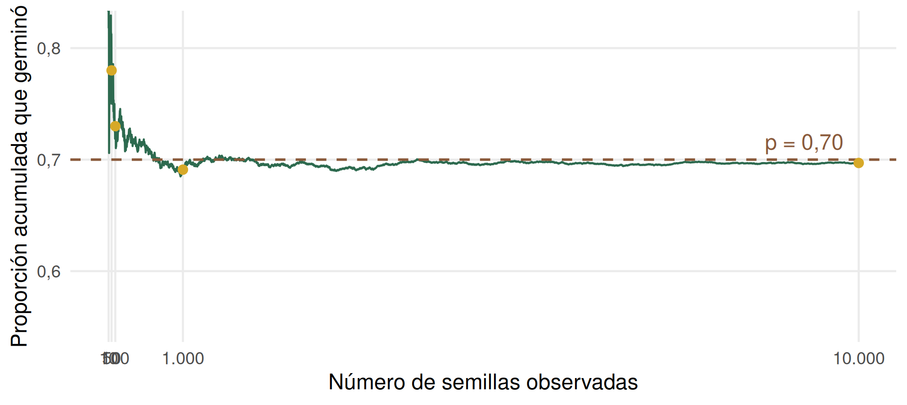
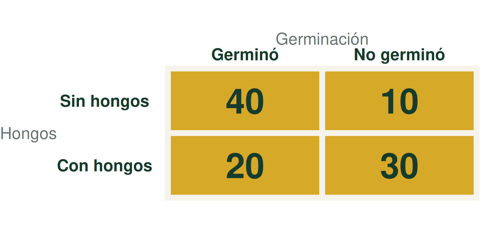
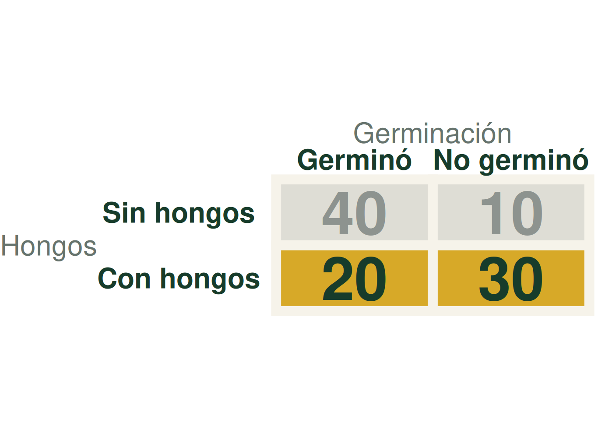
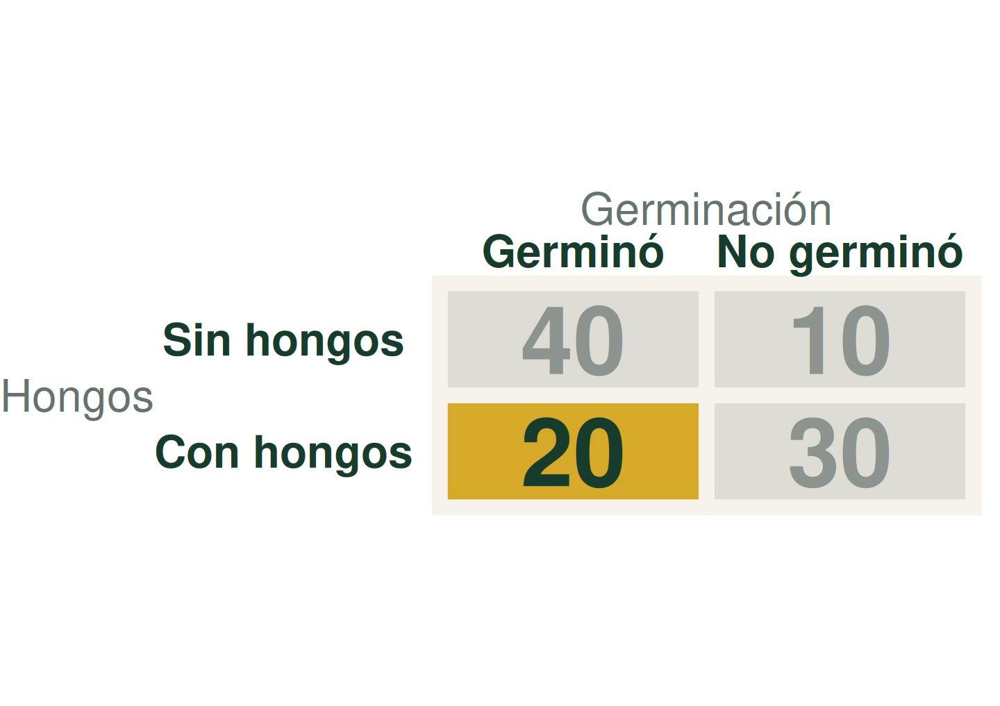
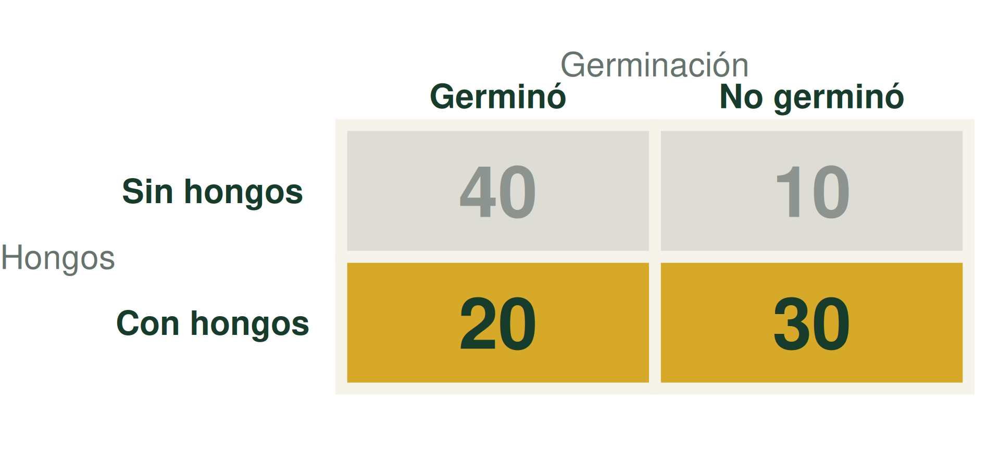
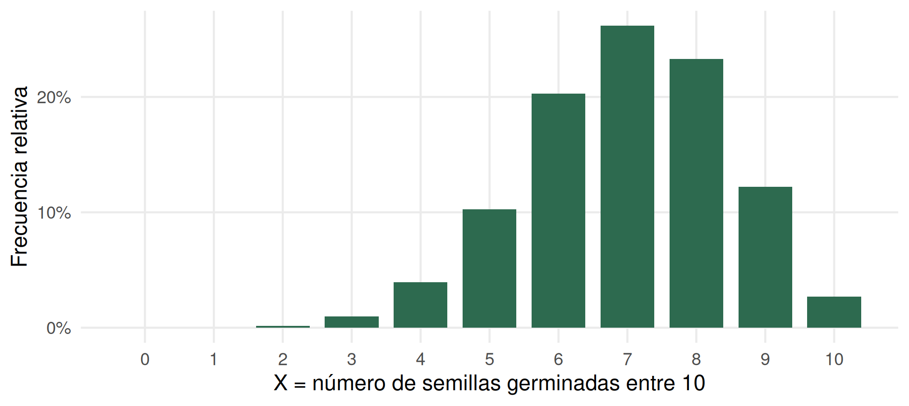
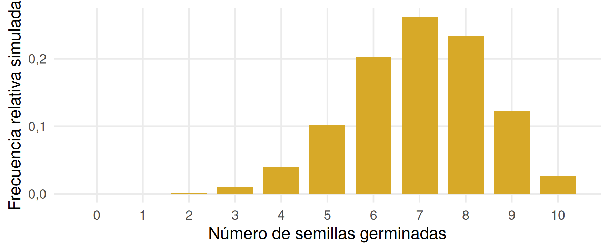

Probabilidad
De lo observado a cuantificar la incertidumbre
Andrés Tálamo
30 de agosto de 2026
La descripción fue el primer paso
Recolectamos datos para responder preguntas.
Aprendimos a organizar, visualizar y resumir lo observado.
Pero si volvemos a observar el sistema, ¿obtendremos exactamente lo mismo?
Investigar también implica aprender a razonar bajo incertidumbre.
Una nueva semilla abre una pregunta
✓✓✓✓✓✓✓✓✓✓✓✓✓✓××××××
✓14 germinaron
×6 no germinaron
Si tomo una nueva semilla del lote, ¿va a germinar?
No podemos saberlo con certeza. Sí podemos preguntar qué tan probable es.
Lo observado nos da una primera pista
\[\frac{14}{20}=0{,}70\]
En nuestra muestra, la frecuencia relativa de germinación fue 0,70.
¿Será también 0,70 si probamos otras semillas?
Al principio, la frecuencia relativa fluctúa mucho
Simulamos semillas una detrás de otra, independientes, cada una con \(P(\text{germinar})=0{,}70\). Después de cada semilla recalculamos la proporción acumulada que germinó.

En un lote real, la probabilidad verdadera es desconocida.
Con muchas repeticiones, se estabiliza

La probabilidad describe un patrón de largo plazo
En una larga secuencia de repeticiones, la frecuencia relativa de un resultado tiende a estabilizarse.
\[P(\text{germina})=0{,}70\]
No significa que entre las próximas 10 semillas germinarán necesariamente 7.
Si los resultados son equiprobables, podemos contar
\[P(A)=\frac{\text{número de casos favorables}}{\text{número de casos posibles}}\]
Dado ideal: \(P(\text{par})=3/6=0{,}50\)
Moneda ideal: \(P(\text{cara})=1/2=0{,}50\)
Urna: 2 semillas rojas entre 5 igualmente seleccionables: \(P(\text{roja})=2/5\).
Esta es la definición clásica y requiere resultados elementales igualmente probables. La germinación biológica no se resuelve suponiendo equiprobabilidad: puede estimarse con frecuencias observadas.
Sabemos los resultados posibles, no cuál ocurrirá
Tomamos al azar una semilla y registramos si germina.
- ¿Sabemos qué resultado obtendremos? No.
- ¿Sabemos cuáles son los resultados posibles? Sí.
Un experimento aleatorio tiene resultados posibles conocidos, pero su resultado particular es incierto.
El espacio muestral reúne las posibilidades
Para una semilla:
\[S=\{G,N\}\]
G
germina
germina
N
no germina
no germina
El espacio muestral es el conjunto de todos los resultados posibles.
Un evento agrupa resultados con una condición común
Para dos semillas:
\[S=\{GG,GN,NG,NN\}\]
A: germina al menos una
\[A=\{GG,GN,NG\}\]
B: germinan las dos
\[B=\{GG\}\]
Un evento es un conjunto de resultados que cumplen una condición. Siempre: \(0\leq P(A)\leq1\).
La misma historia continúa con dos características
En 100 semillas registramos si germinaron y si presentaron hongos.

Los totales marginales dan probabilidades de una sola variable
\[P(\text{germina})=\frac{60}{100}=0{,}60\]

\[P(\text{hongos})=\frac{50}{100}=0{,}50\]
“Germina y tiene hongos” selecciona una celda

\[P(\text{germina y hongos})=\frac{20}{100}\] \[=0{,}20\]
La probabilidad conjunta considera ambas características entre todas las semillas.
Saber que hay hongos puede cambiar el resultado
Entre las semillas con hongos, ¿qué proporción germinó?

Ahora el conjunto de referencia son 50 semillas: 20 germinaron y 30 no.
Condicionar significa cambiar el denominador
\[P(\text{germina}\mid\text{hongos})=\frac{20}{50}=0{,}40\]
“Entre las semillas con hongos, 40% germinó”.
La barra vertical se lee “dado que”.
Después del significado, podemos abreviar
Definimos:
A = presenta hongos
B = germina
\(P(A)=P(\text{hongos})\)
\(P(B)=P(\text{germina})\)
\(P(B)=P(\text{germina})\)
\(P(A\cap B)=P(\text{hongos y germina})\)
\(P(B\mid A)=P(\text{germina}\mid\text{hongos})\)
\(P(B\mid A)=P(\text{germina}\mid\text{hongos})\)
Conjunta y condicional obedecen lógicas distintas
Conjunta
\[P(A\cap B)=\frac{20}{100}=0{,}20\]
“Hongos y germinación” entre todas.
\(P(A\cap B)=P(B\cap A)\): “A y B” equivale a “B y A”.
Condicional
\[P(B\mid A)=\frac{20}{50}=0{,}40\]
Germinación entre las que tienen hongos.
En general, \(P(A\mid B)\neq P(B\mid A)\).
Invertir la condición cambia el denominador
Entre las semillas que germinaron, ¿qué proporción tenía hongos?
\[P(\text{hongos}\mid\text{germina})=\frac{20}{60}=0{,}333\]
\(P(B\mid A)=0{,}40\)
\(P(A\mid B)=0{,}333\)
Independencia pregunta si A aporta información sobre B
Sin saber si hay hongos
\(P(germina)=0{,}60\)
\(P(germina)=0{,}60\)
Sabiendo que hay hongos
\(P(germina\mid hongos)=0{,}40\)
\(P(germina\mid hongos)=0{,}40\)
Si \(P(germina\mid hongos)=P(germina)\), saber A no cambia la probabilidad de B: son independientes.
Aquí son diferentes. Hongos y germinación no parecen independientes; están asociados. Esto no demuestra causalidad.
La regla general reconstruye la probabilidad conjunta
Regla multiplicativa general
\[P(A\cap B)=P(A)P(B\mid A)\]
\[=0{,}50\times0{,}40=0{,}20\]
Primero restringimos a A; dentro de A preguntamos por B.
La independencia produce un caso especial
Si A y B son independientes, \(P(B\mid A)=P(B)\).
Regla multiplicativa especial
\[P(A\cap B)=P(A)P(B)\]
\[=0{,}50\times0{,}60=0{,}30\]
La regla especial surge de la general sólo bajo independencia. Aquí esperaría 0,30, pero observamos 0,20.
Dos comparaciones evalúan la misma independencia
Condicional vs. marginal
\[P(B\mid A)\stackrel{?}{=}P(B)\]
\[0{,}40\neq0{,}60\]
Conjunta observada vs. conjunta suponiendo independencia
\[P(A\cap B)\stackrel{?}{=}P(A)P(B)\]
\[0{,}20\neq0{,}30\]
En ambos casos, si las probabilidades coinciden, quiere decir que la ocurrencia de A no modifica la de B, o sea que A y B son independientes.
Mini actividad: tratamiento y estado fitosanitario
| Enferma | Sana | Total | |
|---|---|---|---|
| Con tratamiento | 10 | 40 | 50 |
| Sin tratamiento | 20 | 30 | 50 |
| Total | 30 | 70 | 100 |
- ¿Cuánto vale \(P(ConTrat\cap Enferma)\)?
- ¿Cuánto vale \(P(Enerma\mid ConTrat)\)?
- ¿Cuánto vale \(P(Enferma)\)?
- ¿El hecho de estar enferma parece independiente del tratamiento?
- Hagamos una tablas de frecuencias relativas para interpretar
\(P(Enferma\mid ConTrat)=0{,}20\) \(\neq\) \(P(Enferma)=0{,}30\). No parecen independientes.
La tabla muestra asociación; sin conocer el diseño, no permite afirmar que el tratamiento causó la diferencia.
Primero interpretemos el lenguaje
| La pregunta dice… | Buscamos… | Notación |
|---|---|---|
| A o B | unión | \(P(A\cup B)\) |
| A y B | intersección | \(P(A\cap B)\) |
| A dado B | condicional | \(P(A\mid B)\) |
| no A | complemento | \(P(\overline{A})\) |
Primero interpretar la pregunta. Después elegir la regla.
Al sumar A y B, la intersección aparece dos veces
A
B
A ∩ B
Regla aditiva general
\[P(A\cup B)=\] \[P(A)+P(B)-P(A\cap B)\]
\[=0{,}50+0{,}60-0{,}20\] \[=0{,}90\]
Restamos la intersección porque al sumar A y B la contamos dos veces.
La regla aditiva tiene un caso especial
\[P(A\cup B)=P(A)+P(B)-P(A\cap B)\]
Al seleccionar una semilla, puede provenir del proveedor A o del proveedor B. Una misma semilla no puede provenir simultáneamente de ambos.
Aeventos mutuamente excluyentesB
\[P(A\cap B)=0\]
\[P(A\cup B)=P(A)+P(B)-0=P(A)+P(B)\]
El complemento es otro caso excluyente: si \(B\) = germina, \(\overline{B}\) = no germina y \(P(\overline{B})=1-0{,}60=0{,}40\).
Hagamos una pausa
Vamos a hacer una pequeña investigación con nosotros mismos para responder una pregunta.
Primero planteamos la pregunta. Después vemos qué datos necesitamos.
Nuestra pregunta
Entre los estudiantes presentes hoy en la clase de EyDE, ¿cómo varía el uso del celular (usó / no usó) durante el viaje a clase según si vinieron en transporte público o en otro medio?
¿Cuál es la variable de clasificación?
¿Cuál es la variable de respuesta?
¿Cuál es la unidad estadística?
¿Cuál es la población de interés?
¿Cómo hacemos para responderla?
¿Cómo podemos responder nuestra pregunta?
Necesitamos datos.
Los vamos a obtener ahora, levantando la mano.
Medio de transportepúblico / otro
Uso del celular durante el viajesí / no
Ya tenemos los datos. ¿Qué calcularían?
¿Qué cálculo harían con la tabla para responder nuestra pregunta original?
Con la misma tabla, practiquemos
\[P(C)=?\] ¿Usó el celular durante el viaje?
\[P(T)=?\] ¿Vino en transporte público?
\[P(C\cap T)=?\] ¿Usó el celular y vino en transporte público?
Con la misma tabla, sigamos practicando
\[P(C\mid T)=?\] Entre quienes vinieron en transporte público, ¿usó el celular?
\[P(T\mid C)=?\] Entre quienes usaron el celular, ¿vino en transporte público?
\[P(C\cup T)=?\] ¿Usó el celular o vino en transporte público?
Plan B: nuestra pregunta
Entre los estudiantes presentes hoy en la clase de EyDE, ¿cómo varía el haber desayunado (sí o no) antes de venir según si se levantaron antes de las 6:30 o después de las 6:30?
¿Cuál es la variable de clasificación?
¿Cuál es la variable de respuesta?
¿Cuál es la unidad estadística?
¿Cuál es la población de interés?
Plan B: ¿cómo hacemos para responderla?
Obtenemos los datos levantando la mano.
Hora de levantarseantes de las 6:30 / después de las 6:30
Desayuno antes de venirsí / no
Ya tenemos los datos. ¿Qué calcularían?
¿Qué cálculo harían con la tabla para responder nuestra pregunta original?
Plan B: con la misma tabla, practiquemos
\(D\): desayunó · \(L\): se levantó antes de las 6:30
\[P(D)=?\] ¿Desayunó antes de venir?
\[P(L)=?\] ¿Se levantó antes de las 6:30?
\[P(D\cap L)=?\] ¿Desayunó y se levantó antes de las 6:30?
Plan B: sigamos practicando
\(D\): desayunó · \(L\): se levantó antes de las 6:30
\[P(D\mid L)=?\] Entre quienes se levantaron antes de las 6:30, ¿desayunó?
\[P(L\mid D)=?\] Entre quienes desayunaron, ¿se levantó antes de las 6:30?
\[P(D\cup L)=?\] ¿Desayunó o se levantó antes de las 6:30?
A veces observamos un resultado y queremos inferir qué lo produjo
Hasta ahora preguntamos cosas como:
\[P(\text{resultado}\mid\text{causa})\]
Si conocemos una causa, ¿qué probabilidad hay de observar cierto resultado?
Pero en la práctica muchas veces observamos primero un resultado y preguntamos:
\[P(\text{causa}\mid\text{resultado})\]
¿Qué tan probable es cada causa después de observarlo?
Invertir el condicionamiento cambia la pregunta.
Observamos manchas: ¿cuál es la causa?
Un ingeniero agrónomo revisa una plantación de tomate y observa hojas con manchas. En este ejemplo simplificado consideraremos dos posibles causas.
\(T\): tizón · 30 % de los casos
\[P(T)=0{,}30\qquad P(M\mid T)=0{,}80\]
Si hay tizón, el 80 % presenta manchas.
\(H\): estrés hídrico · 70 % de los casos
\[P(H)=0{,}70\qquad P(M\mid H)=0{,}20\]
Si hay estrés hídrico, el 20 % presenta manchas.
\(M\): presencia de manchas foliares.
Si observamos manchas, ¿cuál es la probabilidad de que la causa sea tizón? \(P(T\mid M)= ?\)
La condición cambia el significado de la pregunta
\[P(M\mid T)=0{,}80\]
Si hay tizón, ¿qué probabilidad hay de manchas?
≠
\[P(T\mid M)= ?\]
Si observamos manchas, ¿qué probabilidad hay de tizón?
En general, \(P(M\mid T)\neq P(T\mid M)\).
Imaginemos 100 casos con estas probabilidades
La pregunta sigue siendo: \(P(T\mid M)= ?\)
Tizón · 30 casos esperados
24con manchas
6sin manchas
Estrés hídrico · 70 casos esperados
14con manchas
56sin manchas
\(30\times0{,}80=24\) con manchas
\(30\times0{,}20=6\) sin manchas
\(30\times0{,}20=6\) sin manchas
\(70\times0{,}20=14\) con manchas
\(70\times0{,}80=56\) sin manchas
\(70\times0{,}80=56\) sin manchas
La probabilidad total construye el denominador
Hay dos caminos mutuamente excluyentes para observar manchas: \(T\rightarrow M\) o \(H\rightarrow M\).
\(T\cap M\)
\(P(T)P(M\mid T)\)
\(=(0{,}30)(0{,}80)=0{,}24\)
\(P(T)P(M\mid T)\)
\(=(0{,}30)(0{,}80)=0{,}24\)
+
\(H\cap M\)
\(P(H)P(M\mid H)\)
\(=(0{,}70)(0{,}20)=0{,}14\)
\(P(H)P(M\mid H)\)
\(=(0{,}70)(0{,}20)=0{,}14\)
\[P(M)=0{,}24+0{,}14=0{,}38\]
En los 100 casos imaginarios, esto es \(38/100=0{,}38\).
Al observar manchas, cambia el conjunto de referencia
Partimos de los 100 casos. La pregunta es \(P(T\mid M)= ?\)
Tizón · 30
24con manchas
6sin manchas
Estrés hídrico · 70
14con manchas
56sin manchas
Atenuamos los 6 y los 56 casos sin manchas. Quedan \(24+14=38\) casos con manchas.
\[P(T\mid M)=\frac{24}{38}\approx0{,}632\]
Ahora nuestro conjunto de referencia son sólo los casos con manchas.
Bayes actualiza la probabilidad después de observar evidencia
Antes de observar la planta
\[P(T)=0{,}30\]
→ observamos manchas \(M\) →
Después de observarlas
\[P(T\mid M)\approx0{,}632\]
30 %→63,2 %
La evidencia cambia qué tan probable consideramos cada causa.
Construimos el numerador y el denominador
Queremos calcular: \(P(T\mid M)= ?\)
Numerador: tizón y manchas
Por la regla multiplicativa:
\[P(T\cap M)=P(T)P(M\mid T)\]
\[P(T\cap M)=(0{,}30)(0{,}80)=0{,}24\]
El 24 % de todos los casos corresponde a plantas con tizón y manchas: \(24/100=0{,}24\).
Denominador: todos los casos con manchas
\[P(M)=0{,}38\]
Entre todos los casos, el 38 % presenta manchas.
Del razonamiento a la fórmula de Bayes
\[P(T\mid M)=\frac{\text{tizón y manchas}}{\text{todos los casos con manchas}}\]
Por la definición de probabilidad condicional:
\[P(T\mid M)=\frac{P(T\cap M)}{P(M)}\]
\[P(T\mid M)=\frac{0{,}24}{0{,}38}\approx0{,}632\]
Entre los casos con manchas, aproximadamente el 63,2 % corresponde a tizón.
Sustituimos \(P(T\cap M)=P(T)P(M\mid T)\):
\[P(T\mid M)=\frac{P(T)P(M\mid T)}{P(M)}\]
Teorema de BayesCombina la definición condicional con la regla multiplicativa.
En general: \(\displaystyle P(A\mid B)=\frac{P(A)P(B\mid A)}{P(B)}\)
Bayes permite razonar desde la evidencia hacia una causa
\[P(T)=0{,}30\]
↓
observamos manchas
↓
\[P(T\mid M)=0{,}632\]
Bayes actualiza la probabilidad de una causa después de observar evidencia.
\[P(\text{causa}\mid\text{evidencia})\]
Una semilla no es lo mismo que diez
Sabemos:
\[P(\text{germina})=0{,}70\]
Ahora plantamos 10 semillas.
¿Cuántas van a germinar?
\[0,1,2,\ldots,10\]
Conocemos los valores posibles, pero no cuál ocurrirá en una tanda particular.
Cada tanda puede dar un resultado distinto
Tanda 1 → 6 germinadas
✓✓✓✓✓✓××××
Tanda 2 → 7 germinadas
✓✓✓✓✓✓✓×××
Tanda 3 → 7 germinadas
✓✓×✓✓×✓✓×✓
La cantidad germinada cambia de una repetición a otra.
Diez mil tandas revelan un patrón

¿Todos los resultados son igualmente probables?
Cada valor posible tiene una probabilidad
Definimos informalmente:
\(X\) = número de semillas germinadas entre 10
Entonces podemos asociar una probabilidad a cada valor:
\[P(X=0),\ P(X=1),\ \ldots,\ P(X=10)\]
El conjunto de valores posibles y sus probabilidades describe una distribución de resultados.
La próxima clase formalizaremos esta idea mediante variables aleatorias y distribuciones de probabilidad.
¿Podemos conocer el patrón sin repetir 10.000 veces?

Sí: podemos usar un modelo probabilístico.
Próxima clase: Distribuciones de probabilidad teóricas
El recorrido de esta clase de Probabilidades
Datos
→
Frecuencias relativas
→
Incertidumbre
→
Probabilidad
→
Dos eventos
→
Conjunta y condicional
→
Independencia
→
Muchas repeticiones
→
Distribución de resultados
La probabilidad no elimina la incertidumbre: nos da un lenguaje para cuantificarla y razonar con ella.

Andrés Tálamo - Estadística y Diseño Experimental - UNSa